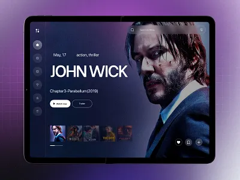

John Hickok · living knowledge platform · storyboard v0.1
Information architecture, wireframed
Real roles & projects · [brackets] = unwritten copy
Journey
Narrow
Open questions
Themes
Calibration
John Hickok
how do you turn ambiguity into a plan
Semantic · results cross categories, not folders
Try
how do you develop designers
where has AI actually helped
A UX leader who can operate at every altitude. [Positioning line — one sentence on translating executive vision into shipped experience.]
C3 standard · bounded media, text on the pane · the pane transmits the site backdrop only, so its contrast is a property of the mode and not of the still · blur, tint and scrim unchanged · scrim --scrim .62 still governs the backdrop stage beneath
Any still, any luma — the crop no longer participates in legibility
Frameworks
rail · numbered spine · top of the hierarchy
Projects
rail · horizontal · snap · C3 standard at rail scale
Teams
3 cards · grid
Experiments & workshops
mixed media · list
Collection · frameworks · [4] artifacts
Frameworks
[Collection description — why frameworks come before projects here.]
All
Strategy
Systems
Leadership
Environment quiets · ambient motion paused
Project · NCR Voyix · [dates]
Fresco
[Framing paragraph — the problem, the ambiguity, and what shipping it required.]
Author's note
[The thinking beside the work — what you'd do differently, in first person.]
Connected to
Next in Projects
Connect
A form where a constraint does real work, and plain email everywhere else.
Why it differs
{{ hybridBlurb }}
Role inquiry · straight to email
You are copying from a job description. A form makes you retype it into boxes; this hands you the same questions in a draft you can edit, send from your own address, and keep in your sent folder.
Arrives in your mail client, pre-filled
Subject · Role — [title] at [company]
You are · external / internal / hiring manager
Title ·
Compensation range ·
Location / remote ·
Link to the posting ·
If nothing opens, your machine has no mail client configured — the address is here to copy:
johnhickok21@gmail.com
Freelance inquiry · mission first
Your mission, in 15 words or fewer
[e.g. Rebuild our back-office reporting so operators trust the numbers.]
Constraint, not a suggestion · 8 / 15
Name
Email
Timeline
LinkOptional
A site, deck or doc I can open in one click. Nothing confidential — we can trade files once we're talking.
Say hello · straight to email
No form for this one. A colleague getting screened by a web form is the wrong feeling, and there is nothing here I need in a particular shape.
Arrives in your mail client, pre-filled
Subject · Hello
Where we crossed paths ·
What you are working on ·
Or copy the address:
johnhickok21@gmail.com
Open question · panel sizing and entry, tested with Connect
{{ panelState }}
Proposed behavior
One panel, two widths, one entry. The panel is always a layer over the page, always enters from the right, and differs only in how much it covers: slide-over at 61.8% — the golden major, so the panel and the strip of page beside it divide the screen the same way the hero card divides itself — with the page visible and dimmed behind it, takeover at 100% with nothing behind it to see. Same component, same animation, one attribute.
Width is a decision about context, not about content length. Slide-over when the page behind is the reason you opened the panel — Connect from a project page, where the work is the context for the message. Takeover when the panel is the destination: Connect from the nav, or any panel on a phone. Below 720px there is no slide-over at all — 61.8% of a 390px screen is a 241px column, which is a form nobody can fill in — so mobile is always a takeover. That is a breakpoint, not a second decision.
The grid disagrees, slightly. On the 12-column desktop grid the nearest honest stop is 7 of 12, which is 58.3% — half a column short of the ratio. Pick one as the source of truth: the ratio if the panel is a proportion of the screen, the column count if its contents must align with the page behind it. I have built 61.8% here, because nothing inside the panel is aligning to the page's columns; if that changes, 7 columns is the better rule and the 3.5% is not worth defending.
Motion. 320ms in, 240ms out, cubic-bezier(.32,.72,0,1) — the same curve the search modal uses, so panels and modals feel like one system. Out is faster than in because a dismissal should not make you wait. The scrim crossfades on the same clock. Under reduced motion the transform is dropped and only the opacity remains, which keeps the spatial change legible without the travel.
What the panel owes the page. The page behind stays mounted and keeps scroll; the URL changes so the panel is linkable and the back button closes it; focus moves into the panel on open and returns to the trigger on close; Esc and a scrim click both dismiss. A takeover still animates from the right rather than cross-fading, so it reads as the same object arriving, not as a page change.
Where it breaks. A slide-over over a stage means two glass surfaces at depth 72 stacked over media, which is the system's most expensive composition — the scrim exists partly to let the panel sit on a calmer ground. And a panel that can be linked to is a page in every way except its markup: if Connect is reachable by URL, it needs a real page for the no-JS and shared-link cases, with the panel as the enhancement.
Interactive experience · altitude lens · printable
Altitude
Time
Capability
Domain
John Hickok
Director, UX Strategy · NCR Voyix
PDF
Atlanta, GA
johnhickok21@gmail.com
LinkedIn
↳ phone held for the PDF, not the page
A UX leader with over a decade driving user-centered design — fostering collaboration, solving ambiguous problems, and communicating with stakeholders at every level.
Altitude
Executive
Director, UX StrategyCommerce strategy alignmentResource allocationSenior-stakeholder consensus
Strategy
Senior UX Manager · UX ManagerDesign-system implementationDesign-project portfoliosMentoring international teams
Tactical
UX Architect · Design EngineerWireframing & prototypingUsability testingInformation architecture
Experience
Mar 2019 — now
NCR Voyix — Director, UX Strategy
UX for the Restaurant line of business — 20+ UX professionals across 15 projects, guiding cross-functional teams across remote, hybrid and in-office work. Accountable for design quality, design-system implementation and resource allocation against the Voyix commerce strategy. Leads and mentors international design teams delivering hospitality, retail and banking applications.
UX Architect
→
UX Manager
→
Senior UX Manager
→
Director
↳ ladder shown as progression · per-role dates not in the resume
Jan 2012 — Mar 2019
Acuity Brands — Design Engineer, ControlsUX for lighting and building-management systems across embedded software, desktop and mobile. Led design teams from concept to release, built responsive prototypes for user testing, and wrote the stylistic and digital guidelines development teams worked from. Completed the Innovation Leadership Program.
2006 — now
Freelance — Graphic DesignerCreative direction and design for a range of clients — identity, apparel and promotional work.
Recognition
2021
R&D Award — Meritorious AchievementFor meritorious technical achievement in software and technology.
Patents
18 US & CA patents and applications
14 granted design patents
USD645196S1 · USD643566S1 · USD653793S1 · USD654208S1 · USD672902S1 · USD672909S1 · USD729793S1 · USD729797S1 · USD772177S1 · USD799102S1 · USD807567S1 · USD808575S1 · USD809701S1 · USD810999S1
1 granted utility patent
US9018840B2
3 published applications
US20140265865A1 · US20180031216A1 · CA2929211A1
Education
Georgia Tech
B.S. Industrial DesignCertificate in Sociology & Social Psychology
Tools & craft
Tools
Figma · Sketch · Adobe Creative Suite
Process
Wireframing · prototyping · usability testing · design thinking · information architecture
Project · NCR Voyix
Selective · 4 of 40
Fresco — selected work
[Framing paragraph — CMS field. Two or three sentences on what the gallery is showing and why these stills were chosen.]


Why this shape
One column, full-bleed, captions beneath — the only layout that holds an unknown mix. Each still keeps its own aspect ratio (height:auto, no crop), so a 4:3 screenshot, a tall mobile capture and a wide diagram can sit in the same gallery without the grid forcing a shape onto any of them.
Captions sit outside the image, which is why the gallery needs no scrim and no measurement — nothing is set over photography, so the glass rule never applies here. That is the trade for the hero: C3 puts text on the image and pays a scrim for it; the gallery keeps the photograph intact and pays a caption line instead.
Sized for four stills, typical six. No pagination, no lazy-load ceremony — below about a dozen images a single column is cheaper than a viewer. If a project ever needs twenty, that is a signal to curate, not to build a lightbox.
Narrow · 390px · nav becomes a bottom bar
John Hickok
● Featured artifact · Fresco
A UX leader who can operate at every altitude.
↳ keeps a pill · the narrow hero is type, not a card, so this is the only target
Frameworks
Projects
Frameworks
Projects
Search
Connect
Narrow · reading takes the full width, chrome shrinks to a back affordance
Project · NCR Voyix
Fresco
[Framing paragraph — the problem and what shipping it required.]
Connected to
Altitude
Systems
UX Strategy team
Next in ProjectsCash Management
Open question · what does arrival look like
Positions the artifact as the first of a curated set rather than a one-off, which makes the depth behind it legible on arrival. Media drops to a supporting band.
The easy case, and the one where the two diverge least. Almost nothing is behind the band to calm, so C2’s ramp has nothing to do and C3’s hairline is the only thing you can see — on a near-black still that line reads as a drawn graphic rather than an edge, which is the strongest argument against C3.
Saturated and legal, with the thinnest margin of the transmitting set. Both hold. C2 keeps the red running unbroken from fruit into plate, which is the whole cinematic argument; C3 cuts the colour field in half and the top of the band goes noticeably flatter than the photograph above it.
Bright, high-detail, and refused by rule 1. C3 holds because its band is a constant .50 tint edge to edge — the text has one known ground. C2’s ramp is thinnest exactly where the title sits, so the title lands on partly-transmitted lime detail and the caption is the only line fully protected.
The worst realistic case: bright overall, but with true black in the same band — one patch refuses dark ink while another refuses light. C3 survives it; C2 shows the failure clearly, with the framing line legible and the title fighting a bright wedge that the mask has already let through.
Synthetic worst case: four fields and a 24px black/white stripe run crossing the entire bottom third. It fails rule 1 and rule 2 at once, which no photograph in the set does. C3 still produces a readable card. C2 does not — the stripe run survives the mask’s upper half and the title sits on alternating black and white. This is the honest ceiling of the ramped approach.
A · Statement
A UX leader who can operate at every altitude.
Positioning-led, no imagery — currently drawn on the homepage frame. Cheapest to build, least cinematic.
One project carries the arrival — matches your note that the first action is selecting a featured artifact, but stakes the first impression on Fresco alone.
C · Question
What would you like to understand?
Search-first. Highest intent-match, but asks the visitor to work before you have shown competence.
how do you turn ambiguity into a plan
strategysystemsteams
B, four more ways
the featured artifact carries arrival · same content, different composition
Closest to B. Type labels ride on the media so the card reads as a piece of work before it reads as an interface. Cheapest change from what you have.
Wide rather than tall, so the hero holds a headline above it without scrolling. Media gets less room — right if the still is a detail crop, wrong if it is a full screen.
01
B3 · Numbered
Fresco
[Framing line.]
1 of 4 featured
Most cinematic and the most demanding: text sits on the still, so it needs a gradient scrim and a crop chosen for a dark bottom third. Media becomes a real dependency.
B4 · round 2, under the current media rules
same composition · five measured stills, six cards · no hand-authored scrim
What broke last time was the mechanism, not the layout: text sat directly on the photograph behind a hand-authored gradient and hardcoded #f5f7f8, so every new image was a fresh legibility negotiation. Under the current tokens the still is a stage that publishes its own measured facts and the card is an ordinary glass surface above it — the composition stops negotiating and starts reading a registry entry. Below is that card, unchanged, over the five test stills. One caveat that changes the answer: density is retired in the shipped tokens — both values resolve to the same pane, a fixed 32px blur at thickness .50 — so nothing escalates on its own any more. Registry windows were measured at 10 / 18 / 72px; the shipped pane sits between the last two, so each card quotes that bracket rather than a single cell.
plain-pour · tone 2,1,1 · dark · worst bright 112→47 across the bracket · transmits
Near-black. Transmits at every depth and band, and publishes almost no tone — the pane over it stays close to achromatic, which is the least interesting version of the effect.
split-spectrum · tone 50,15,92 · dark · worst bright 86→84 · transmits
The best case for B4: saturated hue, tiny luma range. Colour reaches the card as tone rather than as a risk — this is the frame to shoot for when you brief a crop. The verdict holds at both ends of the bracket, so the fixed pane does not change it.
cool-mangosteen · tone 64,54,60 · dark · worst bright 182→161 · transmits
Rejected under the old reading for one specular patch at 198. The pane's own blur had already erased it — this is the still that changed when the measurement moved under the glass, and the 32px pane erases it too.
sat-strawberry · tone 175,46,46 · dark · worst bright 176→133 · transmits, thinnest margin
Legal, and the thinnest margin in the set. Judge this one by eye rather than by the verdict — if B4 ever looks marginal on your own photography, it will look like this.
light-ice · dark chrome · below AA on the muted tier · wrong chrome, not bad media
The failure case, and the diagnosis has changed: the pane is the same .50 thickness as the four above and the ink is still the dark-chrome role, so the framing line and mono label fall below AA. That is a chrome error, not a verdict on the still — the third pane fixes it with no loss of transmission. Read this one as what happens when a bright still keeps dark ink, not as what a bright still costs you.
light-ice · data-glass-fill="light" · ↳ last resort, not the default
An authored opaque fill. Under the amended rule this is the last thing tried, not the second: it is only correct once a measurement shows AA cannot be met with the filter on, and for this still the measurement says otherwise. Kept here as the specimen of what giving up costs — legible, and no longer the composition B4 was picked for. It is B1 with a photograph behind it. The fill has to be re-declared inline because the stage-scoped hued fill outranks the override's own selector.
light-ice · light chrome · transmits · worst 4.66:1 muted / 7.97:1 title ✓ AA
↳ This is the answer for this still. The same pane under the ordinary card rules — depth-72 blur and the tone wash every other card gets, nothing declared inline. The only change from the first pane is chrome mode, which flips the ink to dark-on-light to match the field the blur actually leaves behind. Measured against the composite over the worst local window: title 7.97:1, micro 7.97:1, muted 4.66:1. All clear AA, so the blur stays.
The registry marks this still refuses, and under the amended rule that verdict is advisory. It was derived by thresholds tuned to give up early; the measurement disagrees. Two caveats kept on the record: 4.66:1 is the thinnest margin on the sheet, and it holds because the α is .5 rather than the .31 the depth token would derive — restoring the derived alpha puts the muted tier under 4.5:1. The alpha is set by the measurement here, not by the token.
What the round answers
All five stills hold the composition, at both ends of the blur bracket — including light-ice, which the registry refuses and which measures AA-clear anyway once the chrome mode is right. That is the round's finding, and it changed the rule: blur wins wherever AA holds. Density 2 is now the last resort, taken only when a measurement shows AA cannot be met with the filter on — not the second thing tried, and never a response to a thin margin. The registry's verdict is advisory; the composite measurement over the worst local window is binding.
Two things this sheet knowingly breaks, both because it is a specimen: six stages sit on one screen, and six 32px panes sit over the page's own stage, above the reasoned 3–4 concurrent-blur budget. On the real homepage there is one featured still and one pane.
Open, and reshaped by the amendment: the failure path is now a measurement path, so the pipeline question is no longer "which stills are safe" but "where does the measurement run." A build step that composites fill over blurred media and reports the worst-window ratio makes B4 usable on whatever the CMS returns; without it, every featured still needs the numbers checked by hand. Also open: chrome mode is now a legibility lever, not just an atmosphere choice — does the featured card follow the site mode, or pick the mode its own still measures best in?
B4 · round 3, the card as a three-layer stage
media · surface · text · three ways to build the surface · both modes
Round 2 kept the still legible by putting a discrete pane on top of it, which is why it stopped feeling like B4 — a card floating on a photograph is not a photograph carrying a card. This round keeps the original composition and builds it the way the rest of the site is built: the still is Layer 1 and fills the card, the surface is a bottom-weighted tint that ramps out instead of ending, and text takes the published Layer 3 roles. The three columns differ only in how the surface is made. Each is shown in both modes — light tint with dark ink over a bright still, dark tint with light ink over a dark one — so the crop requirement becomes "tinted bottom third in the direction of the mode", not "dark bottom third" full stop.
C1 · Scrim only
glass-scrim · 62% gradient · content in the bottom 38.2%
Dark · split-spectrum
Light · light-ice
The system’s stock protection gradient, nothing else. The still stays perfectly sharp behind the type, which is the most cinematic of the three and the cheapest — no filter at all. It is also the one that depends most on the crop: the gradient darkens, it does not calm, so detail in the bottom third still competes with the framing line.
C2 · Ramped pane
blur 32 · tint .50 · bottom 38.2%, masked out
Dark · split-spectrum
Light · light-ice
The surface is real glass but has no edge: blur, tint and tone all fade to nothing by the top of the band, so the still dissolves into the plate rather than being interrupted by it. Detail behind the type is calmed as well as darkened, which is what makes this the one that survives an unlucky crop. Most cinematic of the two blurred options, and the closest thing here to the original B4 with the legibility problem solved.
C3 · Banded pane
blur 32 · tint .50 · bottom 38.2% · hairline top edge
Dark · split-spectrum
Light · light-ice
The same pane with its edge declared: a hairline and a hard top, so the card reads as media above and surface below. Most consistent with the nav and the cards elsewhere on the site, and the easiest to reason about in code. It also spends the effect — you can see the seam, and the still becomes a picture in a frame rather than the whole card.
Notes
Mode is the variable that does the work. Under dark chrome the tint is 10,10,10 and ink is light; under light chrome it is 255,255,255 and ink is dark — one attribute, two atmospheres, and light-ice, the still that failed every dark-chrome test last round, is the right still for the light card. The surface still reads the media tone, so the plate carries the photograph’s hue instead of being neutral grey.
What this does not buy: none of the three removes the crop requirement, it changes what the crop has to be — a quiet bottom third in the direction of the mode. C2 has the widest tolerance, C1 the narrowest. And the surfaces here are authored from tokens rather than the .glass recipe, because none of the shipped levels is a bottom-anchored, masked band; if one of these wins it should land in the system as a level, not stay inline in a card.
Open: pick a column, and say whether the featured card follows the site mode or pins to one atmosphere regardless — a hero that flips with the theme is honest, a hero that always reads dark is more like a film still.
B4 · round 4, C2 against C3 on five stills
decided · C3 is the standard · C2 kept as a later option
Every number below was measured for this sheet rather than quoted: each still was downscaled, blurred by the pane’s own 32px radius at measurement scale, then windowed across the bottom third — the footprint the surface actually covers. p50 is the global median luminance, worst is the brightest p95 and darkest p5 found in any single window. Rule 1 refuses a still at p50 ≥ 128; rule 2 refuses it when one window exceeds 192 while another falls below 64. Chrome follows the still, so each pair is shown in the mode its luminance calls for.
Wine pour
plain-pour.jpg · tone 1,1,1 · p50 0 · worst 29 / 0 · transmits · dark chrome
C2 · ramped
C3 · banded
Strawberries
sat-strawberry.jpg · tone 175,46,46 · p50 73 · worst 146 / 20 · transmits · dark chrome
C2 · ramped
C3 · banded
Limes
light-ice.jpg · tone 213,220,193 · p50 231 · worst 252 / 94 · refuses · p50 231 · light chrome
C2 · ramped
C3 · banded
Citrus
warm-citrus.jpg · tone 227,166,98 · p50 184 · worst 239 / 32 · refuses · bidirectional · light chrome
C2 · ramped
C3 · banded
Quad test pattern
test-pattern-quad.png · tone 162,130,107 · p50 138 · worst 210 / 46 · refuses · both rules · light chrome
C2 · ramped
C3 · banded
Decided · C3 is the standard · the homepage hero above is built on it
Ship C3 as the default hero card. The two are visually close on media that transmits and diverge sharply on media that does not — and three of these five stills do not. C3’s band is a constant thickness edge to edge, so the ground under the type is the same rectangle whatever the photograph does; C2’s ramp is thinnest precisely where the title sits, which makes its weakest region coincide with its most important line. A treatment whose failure mode is “the headline gets harder to read, quietly” is the wrong default for a slot fed by content nobody reviews at render time.
Three further reasons, in order of weight. Predictability beats per-instance tuning: C3 can be specified once and verified once, while C2 has to be re-judged per crop, and per-instance judgement is what produced the patchwork the design system exists to prevent. The failure is visible rather than silent: when C3 is wrong you see a seam, which someone fixes; when C2 is wrong you see a slightly muddy title, which ships. The card lost its pill, so the surface edge is now the only thing signalling that the whole card is a target — the seam is doing affordance work it was not doing when a button carried it.
Keep C2 for the single featured hero, where the crop is curated, measured and reviewed — plain-pour and strawberries above are exactly that case, and C2 is the better card on both. That is one treatment for the one place you control the photograph and another for the many places you do not, which is the same split you were weighing between B1 and B4, now settled on the surface rather than on the layout.
Where I would push back on myself: the quad pattern is deliberately harder than anything a portfolio will publish, and if the featured slot is always a curated crop then C2 wins outright and this recommendation is over-engineered. The question that settles it is not aesthetic — it is whether any hero image can ever reach the page without a person looking at it.
Decided · rails are the primary browse · mosaic is the exception
A · Rails — horizontal, snapping, one row per category · primary
Fresco
Instantly legible — everyone knows this gesture. Chosen as the primary browse, which makes imagery a requirement rather than a nicety: a rail card is a still with a name under it, so an entry with no visual has nothing to be. Consequence to design for — every publishable item needs a measured crop, and items that cannot earn one belong in the mosaic or in a list, not in a rail with a grey placeholder.
FrescoCash Management
Aloha Smart Manager
ITM
B · Editorial mosaic — weighted tiles, judgment visible · secondary
Size carries editorial judgment, which is itself evidence of taste. Kept for the minor collections — writing, talks, side work — where tiles can carry a title alone and the set is small enough to balance by hand. Not the default: it needs curation per item, which does not survive a growing library.
FrescoFeatured project
Altitude
ITM
Teams
AI / vibe-coding workshop
Operating cadence
C · Relationship view — artifacts placed by what they connect to
Closest to the living-system intent. Needs the relationship data to exist first, plus a keyboard and small-screen fallback.
Open question · what reading an artifact feels like
A · Full takeover
Fresco
Environment disappears; typography is the whole screen. Best reading, weakest sense of place — right for frameworks.
Media stays present while reading — right for POS and back-office work where the screens are the argument. Cramped on narrow.
Preview then commit — keeps spatial continuity and suits skimming recruiters. Two steps to real reading.
Same card, same 50% tint — only the blur radius changes
Over the live mesh
The forgiving case — sparse, uniform, no fine texture
16px
Project · NCR Voyix
Fresco
An ambiguous brief turned into a shipped system.
18 min · applies Altitude
24px
Project · NCR Voyix
Fresco
An ambiguous brief turned into a shipped system.
18 min · applies Altitude
32px · current
Project · NCR Voyix
Fresco
An ambiguous brief turned into a shipped system.
18 min · applies Altitude
40px
Project · NCR Voyix
Fresco
An ambiguous brief turned into a shipped system.
18 min · applies Altitude
Over a photograph
The hard case — detail at every scale, which is what sets the default
{{ stripPhotoLabel }}
{{ stripPhotoNote }}
16px
Project · NCR Voyix
Fresco
An ambiguous brief turned into a shipped system.
18 min · applies Altitude
24px
Project · NCR Voyix
Fresco
An ambiguous brief turned into a shipped system.
18 min · applies Altitude
32px · current
Project · NCR Voyix
Fresco
An ambiguous brief turned into a shipped system.
18 min · applies Altitude
40px
Project · NCR Voyix
Fresco
An ambiguous brief turned into a shipped system.
18 min · applies Altitude
Two atmospheres, independently designed — not inverted
Dark · near-black media, translucent panes at density 0, light ink. Blur is real but subtle — little texture behind the pane to transmit.
Light · bright media measures as a light field, so the ink flips dark on light — but the pane keeps its blur. Under the amended rule light chrome transmits at density 0 like every other surface; it was the mode that measured best. Legibility negotiated by measurement, not surrendered.
Frame notes
{{ noteTitle }}
{{ notePurpose }}
Motion
{{ noteMotion }}
Still open
{{ noteOpen }}
Content rules on this board
Roles, dates, scope figures and project names come from your inventory and are real. Anything in [brackets] is copy that has not been written — no narratives, metrics or bios are invented.
Frames are live: click cards, nav and search to move between them. Grey bars stand in for body copy.